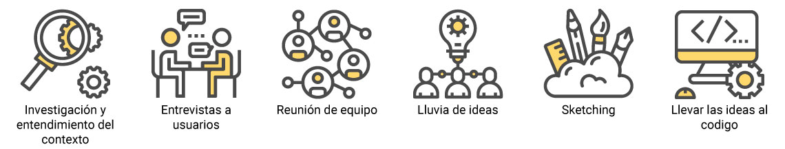

Sobre el projecto
Banigualdad es una organización sin fines de lucro que busca capacitar y financiar a pequeños emprendedores, con el fin de brindar oportunidades para surgir.
Esta organización decidió crear una alianza con Laboratoria con el propósito de crear una nueva web/app para la institución. Esta nueva plataforma busca ser una vitrina que muestre los productos y servicios de los emprendedores con el fin de darlos a conocer y generar una red de contacto.
Tiempo de trabajo: 5 días
Mi rol: Entrevista con usuarios, observación contextual, proceso de ideación, user persona, prototipado de alta en Figma.
Trabajo multidisciplinario entre Frontend y UX designer
Desafío
Como grupo multidisciplinario se nos pidió crear una web/app con el propósito de impactar dos focos centrales.
Enfocado totalmente en el emprendedor:
• Aumentar sus canales de venta para así poder promocionar sus servicios y productos.
• Contar con un espacio que les ayude y permita interactuar con los otros emprendedores, proveedores, etc.
• Enfocado en los beneficios de la fundación:
• Poder entregar a los emprendedores un nuevo servicio cada vez más integra.
• Aumentar la fidelización de nuestros emprendedores.
Investigación
Como primer paso se hizo una investigación en profundidad de la organización Banigualdad, todo esto con el fin de entender de mejor manera los principios y esencia de nuestro cliente, cómo funciona y de qué manera se relaciona con sus usuarios.
A esto lo siguió una búsqueda exhaustiva de referentes, a nivel funcional y de diseño. Este trabajo se realizó de manera grupal, con la finalidad de que la gran mayoría del squad viera y comprendiera a nivel de contenido, arquitectura de la información, diseño y usabilidad el estado en que se encuentra la competencia y referentes actualmente.
De todo esto se sacó aprendizajes que se estudiaron a nivel de squad.
Entrevistas a emprendedores
A través de las entrevistas realizadas a los emprendedores que la fundación nos facilito se logró aclarar un poco más cuál era realmente el perfil de los usuarios de Fundación Banigualdad.
Decidimos salir a terreno, específicamente a una de las reuniones semanales realizadas por uno de los equipos (18 personas más su asesor) de emprendedoras. En esta salida se puso entrevistas a dos emprendedoras y a su asesor.
Aprendizajes e identificación de problemas
Al final de cada etapa de investigación se hacía una pequeña reunión para materializar mediante post-its los aprendizajes obtenidos en cada uno de estos procesos.
Se conversaban con el fin de aclarar y no dejar nada sin plasmar de manera física. Todos estos post-its se pegaban en la pared para que cualquier integrante del squad pudiera ver los resultados de la investigación cuando quisiera.
Una vez echa toda esta investigación, rescate de aprendizajes y elaboración de conclusiones, se pudo identificar más fácilmente los pros y los contras de la creación de esta nueva web/app.
Problemáticas detectadas
• El rango de edad de las usuarias y usuarios es amplio, pero la balanza se carga más hacia mujeres mayores de 50 años.
• Muchas de ellas no suelen usar su celular más que para comunicarse (Llamadas y WhatsApp).
• Para muchas el único contacto real con una aplicación es a través de WhatsApp.
• Varias de las emprendedoras entrevistadas no mostraron interés en usar la aplicación.
Brainstorming
Como equipo se realizó una reunión que tenía como propósito principal hacer una gran lluvia de ideas, basada en todos los aprendizajes y desafíos encontrados a través de la investigación. En esta etapa se realizaron pequeños sketchs conceptuales para entender mejor el flujo de la información adquirida.
{kind=link}
{kind=link}
{kind=link}
{kind=link}
{kind=link}
{kind=link}
{kind=link}
{kind=link}
{kind=link}
{kind=link}
{kind=link}
{kind=link}